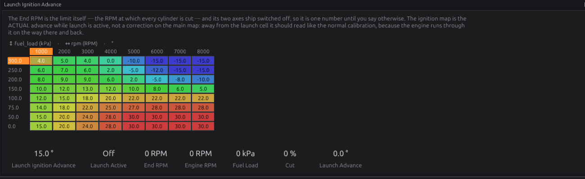
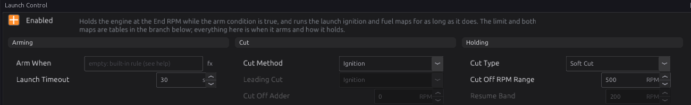
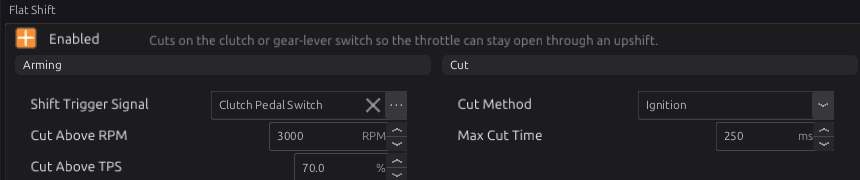
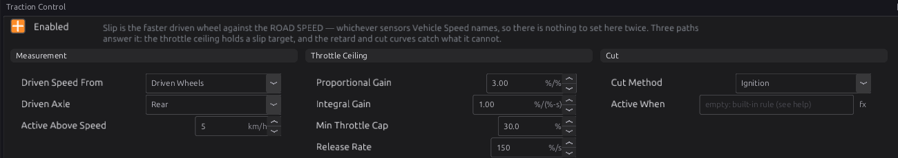
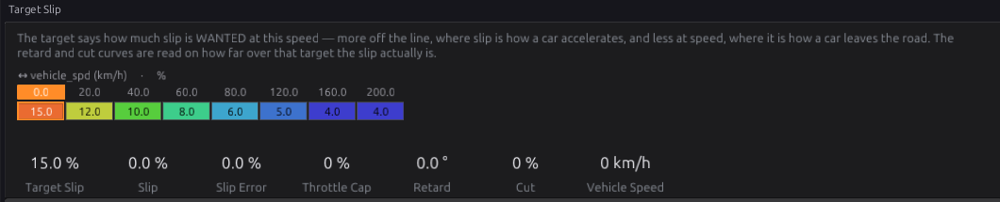

Launch, shift and traction¶
Intermediate → Advanced
In one sentence: launch control holds the engine at a set speed on the line with its own timing and fuel maps, flat shift cuts the engine for a moment so you can change up without lifting, and traction control pulls power when the driven wheels spin faster than the car is moving.
What it does¶
Basic
Three modules under Configuration ▸ Vehicle Functions:
- Launch Control (
launch) — a second rev limiter for the start line. While it is armed it holds the engine at the End RPM by cutting ignition or fuel, and the engine runs on the launch ignition and fuel maps instead of the normal ones. On a turbo engine, retarded timing at the line builds boost before the clutch is let out. - Flat Shift (
flat_shift) — while the clutch (or a shift button) is pressed at high RPM and throttle, it cuts ignition or fuel for a fraction of a second so the gearbox unloads and the next gear goes in with the throttle still open. - Traction Control (
traction_control) — measures slip, how much faster the driven wheels turn than the car is moving, and when it is above a target: lowers the throttle ceiling (on drive-by-wire), retards the timing, and cuts.
None of them replaces the main rev limiter (chapter 27), which still protects the engine the whole time.
How it works¶
Intermediate
1 · Launch: when it arms¶
Launch is armed while its Arm When condition is true. Left empty, the built-in rule is:
- the car is standing still (road speed below 5 km/h), and
- the throttle is open — above 20 %. On drive-by-wire this is the driver's pedal request; with a cable throttle it is the throttle position.
With no road speed or no throttle reading, launch does not arm. So idling at the lights runs the normal maps, and flooring the throttle on the line arms the launch.
Arm When is an expression (chapter 34) for any other rule, for example:
| Arm When | Means |
|---|---|
launch_sw |
a dedicated launch button |
clutch_sw and vehicle_spd < 5 |
clutch pressed, car stationary |
launch_sw and clt > 60 and pedal_demand > 50 |
button, warm engine, pedal past half |
trans_brake_sw |
a trans-brake switch |
An expression that cannot be worked out arms nothing and sets P1740.
Launch Timeout (default 30 s) ends a launch that has been held that long. Launch then stays off until the arm condition goes false and true again — so a stuck switch cannot hold the cut for ever. 0 means no timeout.
2 · Launch: while it holds¶
While launch is armed:
- Timing. The Launch Ignition Advance table (by engine speed and load) is the actual spark advance — it replaces the main advance map, not adds to it. The normal advance trims (coolant, air temperature, idle, transients, overall trim) are left out, except that coolant and air temperature retard still applies. Knock, protection, traction, nitrous and anti-lag retards all still subtract.
- Fuel. The Launch Fuel Correction table adds or removes fuel as a percentage (default 0).
- The limit. Launch End RPM is the speed at which the cut is total. It is one number by default (5000 RPM). Switch on its load axis to hold a lower RPM until boost builds, or its road-speed axis to let the limit rise as the car rolls — but note the built-in arm rule disarms at 5 km/h, so a rising limit needs an Arm When that stays true while moving (a button, for example).

How it cuts:
- Cut Method: Ignition (default; keeps the turbo lit — the classic two-step), Fuel (kinder to the turbine), or Both.
- Cut Type: Soft Cut (default) ramps the cut in across Cut Off RPM Range (500 RPM) below the End RPM — 50 % cut halfway up the range, all cylinders at the End RPM — so the engine leans on the limit instead of bouncing off it. Hard Cut cuts everything at the End RPM and releases Resume Band (200 RPM) below it.
- With Both, Cut Off Adder puts the second cut that many RPM above the first, and Leading Cut says which one goes first.
When launch disarms, the cut, maps and limit all go back to normal at once.
3 · Flat shift¶
Flat shift cuts while all of these are true:
- the Shift Trigger Signal is on (default the Clutch Pedal Switch);
- engine speed above Cut Above RPM (default 3000);
- throttle above Cut Above TPS (default 70 %);
- and the cut has lasted less than Max Cut Time (default 250 ms) this shift.
Releasing the trigger re-arms it for the next shift. Cut Method is Ignition by default.
4 · Traction control: measuring slip¶
Slip = (driven speed − road speed) ÷ road speed, in percent.
- Driven speed — with Driven Speed From = Driven Wheels, the faster wheel of the driven axle (Driven Axle, default Rear). The faster one, because an open differential lets one wheel spin while the other grips. With Drive Train, the gearbox or driveshaft pickup.
- Road speed — the ECU's Vehicle Speed
vehicle_spd(chapter 32). This must come from wheels that are not driven (or GPS). If Vehicle Speed's Main Source is the drive train or the driven wheels, slip always reads zero and traction control never acts.
Below Active Above Speed (default 5 km/h) it does nothing: a percentage of a tiny speed is noise. Active When (an expression; empty = always) can switch it with a dash switch or a CAN flag.
5 · Traction control: the three responses¶
The slip is compared with Target Slip, a curve by road speed (default 15 % at a standstill, falling to 4 % above 160 km/h). The difference is the slip error.
- Throttle ceiling
traction_cap— a PI controller (Proportional Gain 3.00, Integral Gain 1.00) lowers the ceiling while the error is positive, never below Min Throttle Cap (30 %). When the slip is back under target it rises again at Release Rate (150 %/s). The ceiling only does anything with an electronic throttle, which reads it as its Traction Cap Signal (chapter 22). - Timing retard — the Timing Retard curve, by slip error (default 2° at 2 % over target, up to 20° at 50 %). This is the fast response: it acts on the very next spark.
- Cut — the Cut Percentage curve, by slip error (default none until 20 % over target, 40 % at 50 %, 70 % at 100 %), cutting by Cut Method (Ignition by default).
Axle check. When the car cruises above 30 km/h with no traction response, the slip should be near zero. If it stays more than 2 % off for 10 seconds, P17B2 is set: the pulses-per-km of the two axles disagree (a wrong tyre size or tooth count).
Before you start¶
Basic
- Launch: a road speed signal (chapter 32) for the built-in rule, and a working throttle sensor or drive-by-wire pedal. Anything else you arm on — a button, the clutch switch — set up as a sensor (chapter 17).
- Flat shift: a clutch switch (or shift button) as a sensor.
- Traction: wheel speed sensors on the driven wheels (or a driveshaft pickup), and a road speed from the undriven wheels or GPS, all calibrated in km/h (chapter 32).
Setting it up¶
Intermediate
Step 1 — Launch control¶
Open Configuration ▸ Vehicle Functions ▸ Launch Control and tick Enabled.

- Leave Arm When empty for the built-in rule, or write your own.
- Set Launch End RPM (the table under Launch Control) to where you want to hold the engine.
- Keep Cut Method Ignition and Cut Type Soft Cut to start.
- Test standing still: floor it, and the engine should hold near the End RPM. Launch Active
launch_activeand Launch Cutlaunch_cut_pctshow what it is doing. - Then shape the Launch Ignition Advance map at the launch point, a few degrees at a time, watching exhaust temperature and boost.
Step 2 — Flat shift¶
Open Flat Shift, tick Enabled, and check Shift Trigger Signal names your clutch switch. Start with Max Cut Time at the default 250 ms; shorten it if the engine flares after the gear goes in, lengthen it if the gear baulks.

Step 3 — Traction control¶
- On Vehicle Speed, set Main Source to the undriven axle (or GPS). Drive at a steady
speed and check that Slip
traction_slipreads close to 0. - Open Traction Control, tick Enabled, and set Driven Axle.
- Keep the default curves at first. Watch
traction_slip,traction_slip_err,traction_retardandtraction_cut_pctin a log on a low-grip surface.


Worked examples¶
Intermediate
Example 1 — turbo car, two-step on a button
- Arm When:
launch_sw and clt > 60. - Launch End RPM 4500; Cut Method Ignition; Soft Cut, range 300 RPM.
- Launch Ignition Advance: about 0° to −10° around 4500 RPM at 150–250 kPa; the normal timing elsewhere.
- Launch Fuel Correction: +5 % at the launch point.
Example 2 — flat shift on a sequential box with a lever switch
- A lever switch wired as a digital sensor; Shift Trigger Signal = that sensor.
- Cut Above RPM 4000, Cut Above TPS 80 %, Max Cut Time 80 ms, Cut Method Ignition.
Example 3 — rear-wheel drive with ABS wheel sensors
- Four wheel speed sensors (chapter 32). Vehicle Speed Main Source = Front Axle.
- Traction Control: Driven Speed From Driven Wheels, Driven Axle Rear.
- Electronic throttle fitted, so the throttle ceiling does most of the work and the retard catches the first moment of wheelspin.
Tuning it¶
Advanced
- Launch RPM: too low and the car bogs off the line; too high and it spins the tyres or overheats the clutch. The load axis on End RPM lets you hold lower until boost arrives, then allow more.
- Launch timing: each degree of retard adds exhaust heat and boost. Watch exhaust temperature; hold launches short.
- Traction target: raise Target Slip at low speed for a better launch on sticky tyres; lower it on a slippery surface.
- Traction gains: if the car bogs and surges, lower Proportional Gain; if wheelspin lingers, raise Integral Gain or the retard curve.
Diagnostics¶
Intermediate
| Code | Meaning | What sets it | What to check |
|---|---|---|---|
| P1740 | Launch: Arm When condition invalid | The expression does not compile against this firmware | Rewrite Arm When |
| P17B3 | Traction: Active When condition invalid | The expression does not compile | Rewrite Active When |
| P17B0 | Traction: no reference speed | Vehicle Speed not being published | Vehicle Speed enabled; its sensors |
| P17B1 | Traction: driven-wheel speed missing | The driven wheels (or drive train) not reading | Driven Axle; the wheel sensors |
| P17B2 | Traction: axles disagree | Steady slip more than 2 % at cruise for 10 s | Pulses per km, tyre sizes (chapter 32) |
All are severity 1 (warnings). While P1740 is set launch control is off, and while P17B0, P17B1 or P17B3 is set traction control is off; P17B2 is only a warning.
Troubleshooting¶
Basic → Advanced
| Symptom | Likely causes | Check |
|---|---|---|
| Launch never arms | No road speed; throttle not above 20 %; Arm When false; timed out earlier | vehicle_spd, throttle or pedal_demand; Arm When; release and re-arm |
| Launch arms but the engine goes past End RPM | Soft cut range too wide; End RPM table has an axis switched on | Cut Type, Cut Off RPM Range; the table |
| Launch ends after a while on the line | Launch Timeout | Timeout; release and re-arm |
| Flat shift never cuts | RPM or throttle below its threshold; wrong trigger signal | Cut Above RPM / TPS; Shift Trigger Signal |
| Engine cuts on a slow clutch dip | Cut Above RPM too low | Raise it |
| Traction never acts | Vehicle Speed from the driven axle; Driven Axle wrong; below Active Above Speed | Main Source; Driven Axle; traction_slip |
| Traction bogs the car | Gains too high; target too low | Proportional Gain; Target Slip |
| P17B2 | Wheel pulses-per-km wrong on one axle | Chapter 32 |
Settings reference¶
Launch Control:
| Setting | What it does |
|---|---|
Launch Control Enabledlaunch.enabledRange: Off or On Default: Off |
Hold RPM against a closed clutch or a trans brake so the engine is on boost at the line, and run the launch fuel and ignition maps while it does. Off, none of it exists: no cut, no maps, and the ignition and fuel calibrations are the ordinary ones. |
Arm Whenlaunch.arm_exprRange: 0 to 0 Default: 0 |
The condition that arms launch control. Empty = the built-in rule: armed while the car is STANDING STILL (road speed below 5 km/h) WITH THE THROTTLE OPEN (above 20 %: the pedal on drive-by-wire, the throttle position otherwise), and never without a road speed and a throttle signal — so idling at a stop runs the normal maps. This is where every interlock lives, because they are all the same kind of statement: launch_sw for a dedicated button, clutch_sw and vehicle_spd < 5 for the clutch-and-stationary rule, launch_sw and clt > 60 and pedal_demand > 50 for the full set of validations, trans_brake_sw for a trans brake. A program that cannot be answered arms NOTHING and raises a code — the safe direction for a limiter that cuts the engine. |
Launch Timeoutlaunch.timeout_sRange: 0 to 600 Default: 30 Units: s |
How long one launch may hold before the module gives up and disarms (0 = no limit). A timer is not a condition, which is why it is here and not in the arm expression: something has to end a launch that is being held against a stuck switch, and holding a cut at 5000 rpm indefinitely cooks the exhaust. Re-arms only when the arm condition goes false and true again, so it cannot simply resume. |
Cut Methodlaunch.cut_methodRange: one of: Fuel, Ignition, Both Default: Ignition |
What gets cut to hold the launch RPM. IGNITION keeps the turbo lit and makes the noise, at the cost of exhaust heat for as long as the launch is held — it is what a two-step is for. FUEL is far kinder to the turbine and builds less boost. BOTH is the most positive hold, and is the only setting where the stagger below does anything. |
Cut Off Adderlaunch.cut_adder_rpmRange: 0 to 1000 Default: 0 Units: RPM |
How far ABOVE the leading cut the second one engages, when the cut method is Both (0 = both at the same RPM). Staggering them gives the hold a graded feel: the lead cut catches the rise on its own, and the second only joins if the engine is still climbing past it. |
Leading Cutlaunch.cut_leadRange: one of: Ignition, Fuel Default: Ignition |
Which of the two cuts engages FIRST when the method is Both and the adder is non-zero; the other follows that many RPM higher. Ignition leading is the usual choice — it holds boost while it works, and fuel is the harder backstop above it. |
Cut Typelaunch.cut_typeRange: one of: Hard Cut, Soft Cut Default: Soft Cut |
HARD CUT is the classic two-step: nothing until the End RPM, then everything, releasing a resume band below it. SOFT CUT ramps the cut in across the range below the End RPM as a percentage delivered frame by frame, so the engine leans on the limiter instead of bouncing off it — steadier at the line and easier on the drivetrain. |
Cut Off RPM Rangelaunch.cut_range_rpmRange: 0 to 2000 Default: 500 Units: RPM |
How far below the End RPM the soft cut starts. Across that range the cut goes from nothing to total, so a wide range is a gentle approach that starts pulling early and a narrow one is nearly a hard cut. Ignored entirely in Hard Cut. |
Resume Bandlaunch.resume_band_rpmRange: 0 to 500 Default: 200 Units: RPM |
How far RPM must fall below the End RPM before a HARD cut releases. It sets how coarse the bounce is: a narrow band holds the RPM tightly but cuts constantly, a wide one is gentler and less precise. The soft cut needs none of this — its duty already falls away as the RPM does. |
Launch End RPM X Channellaunch.end_rpm_table_x_srcRange: -1 to 32767 Default: 125 |
WHICH SIGNAL the X axis of 'Launch End RPM' is looked up on. The axis holds the breakpoints; this says what is compared against them, so changing it re-points the table at a different quantity without moving a single cell — and the breakpoints, chosen for the old signal's range and units, will almost certainly need redrawing. |
Launch End RPM X Axis Enabledlaunch.end_rpm_table_x_enRange: Off or On Default: Off |
Use the X axis of 'Launch End RPM' as a real dimension. Off, the table collapses to a curve on its remaining axes and this one is ignored entirely — the right default for most optional axes, since a dimension nobody calibrates is a set of duplicate rows that still has to be kept in step. |
Launch End RPM Y Channellaunch.end_rpm_table_y_srcRange: -1 to 32767 Default: 360 |
WHICH SIGNAL the Y axis of 'Launch End RPM' is looked up on. The axis holds the breakpoints; this says what is compared against them, so changing it re-points the table at a different quantity without moving a single cell — and the breakpoints, chosen for the old signal's range and units, will almost certainly need redrawing. |
Launch End RPM Y Axis Enabledlaunch.end_rpm_table_y_enRange: Off or On Default: Off |
Use the Y axis of 'Launch End RPM' as a real dimension. Off, the table collapses to a curve on its remaining axes and this one is ignored entirely — the right default for most optional axes, since a dimension nobody calibrates is a set of duplicate rows that still has to be kept in step. |
Launch Ignition Advance X Channellaunch.ign_advance_table_x_srcRange: -1 to 32767 Default: 319 |
WHICH SIGNAL the X axis of 'Launch Ignition Advance' is looked up on. The axis holds the breakpoints; this says what is compared against them, so changing it re-points the table at a different quantity without moving a single cell — and the breakpoints, chosen for the old signal's range and units, will almost certainly need redrawing. |
Launch Ignition Advance Y Channellaunch.ign_advance_table_y_srcRange: -1 to 32767 Default: 125 |
WHICH SIGNAL the Y axis of 'Launch Ignition Advance' is looked up on. The axis holds the breakpoints; this says what is compared against them, so changing it re-points the table at a different quantity without moving a single cell — and the breakpoints, chosen for the old signal's range and units, will almost certainly need redrawing. |
Launch Fuel Correction X Channellaunch.fuel_corr_table_x_srcRange: -1 to 32767 Default: 319 |
WHICH SIGNAL the X axis of 'Launch Fuel Correction' is looked up on. The axis holds the breakpoints; this says what is compared against them, so changing it re-points the table at a different quantity without moving a single cell — and the breakpoints, chosen for the old signal's range and units, will almost certainly need redrawing. |
Launch Fuel Correction Y Channellaunch.fuel_corr_table_y_srcRange: -1 to 32767 Default: 125 |
WHICH SIGNAL the Y axis of 'Launch Fuel Correction' is looked up on. The axis holds the breakpoints; this says what is compared against them, so changing it re-points the table at a different quantity without moving a single cell — and the breakpoints, chosen for the old signal's range and units, will almost certainly need redrawing. |
Launch End RPM Load Axis binslaunch.end_load_axis_nRange: 2 to 8 Default: 8 |
How many breakpoints of 'Launch End RPM Load Axis' are LIVE, out of 8 allocated. Shrinking the axis does not delete the values past the end — they stay in the tune and reappear if it is grown again. Every table sharing this axis is resized with it. Fewer, well-placed breakpoints beat many evenly-spaced ones: resolution is only worth spending where the surface actually bends. |
Launch End RPM Speed Axis binslaunch.end_speed_axis_nRange: 2 to 8 Default: 8 |
How many breakpoints of 'Launch End RPM Speed Axis' are LIVE, out of 8 allocated. Shrinking the axis does not delete the values past the end — they stay in the tune and reappear if it is grown again. Every table sharing this axis is resized with it. Fewer, well-placed breakpoints beat many evenly-spaced ones: resolution is only worth spending where the surface actually bends. |
Launch Map RPM Axis binslaunch.launch_rpm_axis_nRange: 2 to 8 Default: 8 |
How many breakpoints of 'Launch Map RPM Axis' are LIVE, out of 8 allocated. Shrinking the axis does not delete the values past the end — they stay in the tune and reappear if it is grown again. Every table sharing this axis is resized with it. Fewer, well-placed breakpoints beat many evenly-spaced ones: resolution is only worth spending where the surface actually bends. |
Launch Map Load Axis binslaunch.launch_load_axis_nRange: 2 to 8 Default: 8 |
How many breakpoints of 'Launch Map Load Axis' are LIVE, out of 8 allocated. Shrinking the axis does not delete the values past the end — they stay in the tune and reappear if it is grown again. Every table sharing this axis is resized with it. Fewer, well-placed breakpoints beat many evenly-spaced ones: resolution is only worth spending where the surface actually bends. |
Launch End RPMlaunch.end_rpm_tableRange: 500 to 20000 Default: 8 × 8 table Units: RPM |
The RPM at which every cylinder is cut — the launch limit itself. A single cell by default, which is the scalar launch RPM this replaces. Switch on the load axis to hold a lower RPM until boost arrives, or the speed axis to let the limit climb as the car leaves the line; resize either and this stops being one number. |
Launch End RPM Load Axislaunch.end_load_axisRange: 0 to 0 Default: 8-point curve Units: kPa |
Load breakpoints for the End RPM table, absolute manifold pressure. The axis is OFF by default, so the table is one cell until you switch it on — the breakpoints are already drawn so that switching it on gives a populated table rather than a grid of zeroes to fill in before the launch limiter is safe to use again. |
Launch End RPM Speed Axislaunch.end_speed_axisRange: 0 to 0 Default: 8-point curve Units: km/h |
Road-speed breakpoints for the End RPM table, off by default. Switched on, it is how a launch is let out progressively instead of dropped: the limit climbs as the car starts to roll, so the tyres see the torque arriving over a few km/h rather than all at once. |
Launch Ignition Advancelaunch.ign_advance_tableRange: -50.0 to 50.0 Default: 8 × 8 table Units: deg |
The ignition timing the engine runs on while launch control is active — the actual advance, NOT a correction on the base map. Away from the RPM and load a launch is held at it should read like the normal calibration, because the engine runs through these cells on the way to the limiter and on the way out; at the launch point it is typically well retarded, which is what heats the exhaust and builds boost against a closed clutch. Every retard (knock, protection, traction, anti-lag) still subtracts from this, and the ignition module's own min/max advance clamps still apply. |
Launch Fuel Correctionlaunch.fuel_corr_tableRange: -100.0 to 100.0 Default: 8 × 8 table Units: % |
Fuel added or taken away while launch control is active, as a percentage of the calculated charge. Zero everywhere is the right starting point and the right value everywhere except the launch point itself: away from it the mixture should be whatever the fuel table says. At the launch point extra fuel cools the charge and feeds the retarded burn into the exhaust — it goes with the timing in the map beside it, not on its own. |
Launch Map RPM Axislaunch.launch_rpm_axisRange: 0 to 0 Default: 8-point curve Units: RPM |
RPM breakpoints shared by the launch ignition and fuel maps. Worth concentrating around the End RPM, which is the only region a launch is actually held in — the rest of the range is transit. |
Launch Map Load Axislaunch.launch_load_axisRange: 0 to 0 Default: 8-point curve Units: kPa |
Load breakpoints shared by the launch ignition and fuel maps, absolute manifold pressure. The top of the range is where the launch itself sits — boost against a held car — so it is worth more resolution than the vacuum end, which the engine only passes through. |
Flat Shift:
| Setting | What it does |
|---|---|
Flat-Shift Enabledflat_shift.enabledRange: Off or On Default: Off |
Cut on a shift trigger so the throttle can stay open through a gear change. The cut is held only while the trigger is asserted AND the RPM/throttle conditions hold, and it re-arms on release — a stuck-on trigger cannot cut indefinitely because the time limit ends it. |
Shift Trigger Signalflat_shift.trigger_sigRange: -1 to 32767 Default: 65 |
Bus signal that requests the shift cut (active = pressed): clutch switch or a shift button. |
Cut Above RPMflat_shift.min_rpmRange: 0 to 12000 Default: 3000 Units: RPM |
Only cut above this RPM. It stops a clutch dip at idle or in traffic reading as a shift, which is the failure a bare trigger input has. |
Cut Above TPSflat_shift.min_tpsRange: 0.0 to 100.0 Default: 70.0 Units: % |
Only cut at high throttle (a full-throttle upshift). |
Max Cut Timeflat_shift.max_cut_msRange: 0 to 2000 Default: 250 Units: ms |
Max continuous cut per shift — a stuck trigger releases the cut after this (safety). |
Cut Methodflat_shift.cut_methodRange: one of: Fuel, Ignition, Both Default: Ignition |
What gets cut. IGNITION keeps fuel flowing — unburnt charge in a hot exhaust, which is where the bang comes from and also where turbine damage comes from. FUEL is gentler on the exhaust but recovers more slowly, since the manifold has to refill. BOTH is the hardest cut and the harshest. |
Traction Control:
| Setting | What it does |
|---|---|
Traction Control Enabledtraction_control.enabledRange: Off or On Default: Off |
Pull engine output when the driven wheels outrun the road. Slip is the faster driven wheel measured against the road speed — whichever sensors Vehicle Speed's Main Source names, so on a four-wheel-drive car point that at GPS and this works too. It answers through three paths that can be used together: a throttle ceiling, a timing retard, and a cut. |
Active Whentraction_control.enable_exprRange: 0 to 0 Default: 0 |
Leave empty for always on. Otherwise a condition that must be true for traction control to act — a dash switch, a CAN flag, a stalk position, or a rule combining them. While it is false the module publishes no cap, no retard and no cut. |
Driven Speed Fromtraction_control.driven_srcRange: one of: Driven Wheels, Drive Train Default: Driven Wheels |
Which sensor says how fast the engine is turning the wheels. Driven Wheels takes the FASTER of the driven pair, because an open diff lets one spin while the other grips and an average would report half the slip. Drive Train uses the gearbox or driveshaft pickup, which reads the driven wheels averaged through the diff — the setup to pick when the driven axle has no wheel pickups of its own. |
Driven Axletraction_control.driven_axleRange: one of: Front, Rear Default: Rear |
Which axle the engine drives. Only read when Driven Speed From is Driven Wheels. Its faster wheel is the one that spins, and slip is measured against the reference below. Get this backwards and the measurement inverts: the module reads wheelspin as the driven axle running slow, and does nothing at all. |
Active Above Speedtraction_control.min_speed_kphRange: 0 to 255 Default: 5 Units: km/h |
Below this road speed traction control does nothing. A slip percentage is a division by the road speed, so near zero it is noise divided by noise. |
Proportional Gaintraction_control.kpRange: 0.00 to 20.00 Default: 3.00 Units: %/% |
Throttle percent pulled per percent of slip over target, the moment it appears. This is the reflex: too little and the wheels are already spinning before anything happens, too much and the car bogs then surges. |
Integral Gaintraction_control.kiRange: 0.00 to 20.00 Default: 1.00 Units: %/(%-s) |
Throttle percent per percent of slip per second, accumulating while the slip refuses to come back. This is what removes a steady overslip that the proportional term alone would live with. |
Min Throttle Captraction_control.cap_min_pctRange: 0.0 to 100.0 Default: 30.0 Units: % |
The throttle ceiling never goes below this. A floor exists so a bad reading cannot shut the engine down: at zero, one implausible wheel speed closes the throttle completely. |
Release Ratetraction_control.release_pct_sRange: 1 to 2000 Default: 150 Units: %/s |
How fast the throttle ceiling is given back once slip is under target. Pulling throttle is immediate; giving it back is not, because full throttle into wheels that have just stopped spinning is how the next slip starts. Higher is more responsive and more likely to cycle. |
Cut Methodtraction_control.cut_methodRange: one of: Fuel, Ignition, Both Default: Ignition |
Which cut the Cut Percentage table uses. Ignition is instant and puts unburnt fuel into the exhaust; fuel is gentler on the engine and slower to come back because the cylinder has to fill again. Both is the hardest available. |
Target Slip X Channeltraction_control.slip_target_x_srcRange: -1 to 32767 Default: 360 |
WHICH SIGNAL the X axis of 'Target Slip' is looked up on. The axis holds the breakpoints; this says what is compared against them, so changing it re-points the table at a different quantity without moving a single cell — and the breakpoints, chosen for the old signal's range and units, will almost certainly need redrawing. |
Timing Retard X Channeltraction_control.retard_deg_x_srcRange: -1 to 32767 Default: 450 |
WHICH SIGNAL the X axis of 'Timing Retard' is looked up on. The axis holds the breakpoints; this says what is compared against them, so changing it re-points the table at a different quantity without moving a single cell — and the breakpoints, chosen for the old signal's range and units, will almost certainly need redrawing. |
Cut Percentage X Channeltraction_control.cut_pct_x_srcRange: -1 to 32767 Default: 450 |
WHICH SIGNAL the X axis of 'Cut Percentage' is looked up on. The axis holds the breakpoints; this says what is compared against them, so changing it re-points the table at a different quantity without moving a single cell — and the breakpoints, chosen for the old signal's range and units, will almost certainly need redrawing. |
Target Slip Axis (Speed) binstraction_control.slip_tgt_axis_nRange: 2 to 32 Default: 8 |
How many breakpoints of 'Target Slip Axis (Speed)' are LIVE, out of 32 allocated. Shrinking the axis does not delete the values past the end — they stay in the tune and reappear if it is grown again. Every table sharing this axis is resized with it. Fewer, well-placed breakpoints beat many evenly-spaced ones: resolution is only worth spending where the surface actually bends. |
Response Axis (Slip Error) binstraction_control.slip_err_axis_nRange: 2 to 32 Default: 8 |
How many breakpoints of 'Response Axis (Slip Error)' are LIVE, out of 32 allocated. Shrinking the axis does not delete the values past the end — they stay in the tune and reappear if it is grown again. Every table sharing this axis is resized with it. Fewer, well-placed breakpoints beat many evenly-spaced ones: resolution is only worth spending where the surface actually bends. |
Target Slip Axis (Speed)traction_control.slip_tgt_axisRange: 0 to 400 Default: 8-point curve Units: km/h |
The speed breakpoints the target slip is scheduled against. |
Target Sliptraction_control.slip_targetRange: 0.0 to 100.0 Default: 8-point curve Units: % |
The slip the system tries to hold, per road speed. More at low speed, where slip is how a car accelerates off the line; less at speed, where it is how a car leaves the road. |
Response Axis (Slip Error)traction_control.slip_err_axisRange: 0 to 200 Default: 8-point curve Units: % |
The slip-error breakpoints the retard and cut tables are read against — how far over target the slip is, in percent. |
Timing Retardtraction_control.retard_degRange: 0.0 to 40.0 Default: 8-point curve Units: deg |
Timing pulled out at each slip error. This is the fast path: retard reaches the crank on the next spark where a throttle plate takes tenths of a second, so it is what catches a wheel that has already let go. |
Cut Percentagetraction_control.cut_pctRange: 0.0 to 100.0 Default: 8-point curve Units: % |
How much of the ignition or fuel is cut at each slip error, delivered as a duty. Zero across the low end on purpose: a cut is the bluntest thing here and belongs to slip the throttle and the timing have already failed to hold. |
Related¶
- Chapter 20 — Ignition (how retards combine)
- Chapter 22 — Electronic throttle (the traction throttle ceiling)
- Chapter 27 — Speed limiting (the main rev limiter)
- Chapter 32 — Vehicle functions (vehicle speed and wheel sensors)
- Chapter 34 — Generic tables and expressions (Arm When, Active When)